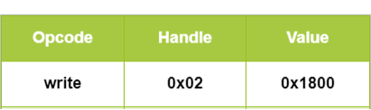

蓝牙¶
WiFi传输适用在短距离大带宽的传输场景中，因此已经大量的用在了电脑和手机的数据传输上。 随着物联网的发展，越来越多的设备需要联网，而这些设备的网络传输带宽需求并没有那么大，比如智能手表、智能手环的数据传输，针对这样的近距离、低带宽的传输需求，蓝牙协议应运而生。
所以还是我们之前的那句话，技术的限制就在那儿，就看我们怎么样使用技术满足不同场景的需求。
1. 蓝牙背景¶
蓝牙(Bluetooth)的名字来源于10世纪丹麦国王Harald Blatand－英译为Harold Bluetooth。1994年，瑞典爱立信公司研发一种新型的短距无线通信技术，致力于为个人操作空间（personal operating space, POS）内相互通信的无线通信设备提供通信标准。POS一般是指用户附近10米左右的空间范围，在这个范围内用户可以是固定的，也可以是移动的。在行业协会筹备阶段,需要一个极具有表现力的名字来命名这项高新技术。行业组织人员，在经过一夜关于欧洲历史和未来无线技术发展的讨论后，有些人认为用Blatand国王的名字命名再合适不过了。Blatand国王将现在的挪威，瑞典和丹麦统一起来；就如同这项即将面世的技术，技术将被定义为允许不同工业领域之间的协调工作，例如计算、手机和汽车行业之间的工作，名字于是就这么定下来了。蓝牙标志最初是在商业协会宣布成立的时候由Scandinavian公司设计的。标志保留了名字的传统特色，包含了古北欧字母“H”，看上去非常类似一个星号和一个“B”，在标志上仔细看两者都能看到。

蓝牙技术由蓝牙特别兴趣小组(Bluetooth Special Interest Group)的组织来维护的。该组织成立于1998年，成员包括爱立信、IBM、Intel、东芝和诺基亚等国际通信巨头。1998年3月，蓝牙技术成为IEEE 802.15.1标准。蓝牙技术的物理层采用跳频扩频结合的调制技术，频段范围是2.402GHz-2.480GHz，通信速率一般能达到1Mbps左右。在蓝牙通信中，蓝牙设备有两种可能的角色，分别为主设备和从设备。同一个蓝牙设备可以在这两种角色之间转换。一个主蓝牙设备可以最多同时和7个从设备通信。在任意时刻，主设备单元可以向从设备单元中的任何一个发送信息也可以用广播方式实现同时向多个从设备发送信息。蓝牙通信的版本也到了蓝牙5.0，速率已经超过了100 Mbps，能够适应现在的不同网络应用的需求。同时针对不同的网络应用场景，蓝牙还提出了低功耗版本BLE，以针对物联网应用中低功耗网络连接的需求。
蓝牙技术的出台立刻引起全世界的关注，曾被美国《网络计算》杂志评为“十年来十大热门新技术”之一，被寄予厚望，作为取代有线连接的手段，“结束线缆噩梦”，让人们真正的“随心而动”。事实上，蓝牙技术的确也广泛的使用在移动设备（手机，PDA）、个人电脑与无线外围设备（如图7-2，蓝牙耳机、蓝牙鼠标、蓝牙键盘等、GPS设备、医疗设备、以及游戏平台（ps3，wii）等各种不同的领域。
蓝牙4.0是Bluetooth SIG于2010年7月7日推出的新的规范，是传统蓝牙的升级版本，包含高速蓝牙、经典蓝牙和低功耗蓝牙三种模式，分别应对数据交换与传输、信息沟通与设备连接、低带宽设备连接为主的不同应用需求。
蓝牙5.0是由蓝牙技术联盟在2016年提出的蓝牙技术标准，蓝牙5.0针对低功耗设备速度有相应提升和优化，同时还提供了基于AoA等定位的功能，关于使用蓝牙进行定位等这一部分我们在后面会进一步进行解释。
蓝牙（Bluetooth®）是一种无线技术标准，可实现固定设备、移动设备和个人之间的短距离数据交换（使用2.4—2.485GHz的ISM波段的UHF无线电波）。低功耗蓝牙（Bluetooth Low Energy，简称BLE）是蓝牙4.0引进的一种新模式，旨在医疗保健产品，可穿戴设备，智能家居等新兴应用。相较经典蓝牙，低功耗蓝牙在保持同等通信范围的同时显著降低功耗和成本。
一般来说，传统蓝牙被用于蓝牙耳机、蓝牙音箱、蓝牙鼠标等需要高频稳定传输数据的场合，而低功耗蓝牙常常被用于智能手环、智能手表、医疗保健设备如智能心率计等设备中。这些设备数据传输量较少，频率较低。使用低功耗蓝牙可以大幅增加他们的待机时间。
由于低功耗蓝牙在传统蓝牙的基础上大幅简化了其通信和数据访问控制流程，其安全性也相对较弱。近年来也出现了许多关于低功耗蓝牙设备的安全问题。
2. BLE工作流程探索¶
下面我们以BLE为例，来详细分析一下BLE工作的主要流程。进而方便大家理解蓝牙协议的建立连接、数据传输的过程，也方便大家理解BLE中具体的技术，比如大家经常提到的跳频是如何实现的。
总的来说，在一次完整的BLE通信中，必须有两个角色，中央设备和外围设备。外围设备通常是数据的持有者，例如智能手环，智能门锁等设备。中央设备是数据的请求者，例如手机，平板电脑等设备。中央设备与外围设备建立连接，通过发送请求读写其中的数据来实现数据同步，或发送控制指令来改变该设备的工作状态。
图2.1展示了BLE设备完成一次通信的工作流程。通常来说，一个外围设备开始工作后，会不断向周围发送不定向的广播数据包，以便中央设备发现它。收到广播包的中央设备可以向该外围设备发送一个连接请求来建立一个BLE连接。收到请求后，外围设备与中央设备会协商一个共同的跳频序列并建立连接。随后，中央设备和外围设备可以使用此跳频序列进行传输数据包。连接建立后，中央设备可以选择加密通信数据或是进行认证过程，以便访问外围设备中具有加密或认证要求的数据。然后，中央设备可以发送读/写请求来访问外围设备中的数据。如果中央设备满足被请求数据的加密和认证要求，则外围设备将执行相应的操作并响应请求的数据。完成数据通信后，外围设备或中央设备可以关闭连接，外围设备返回广播状态。 在之后的章节中，我们将详细介绍每一个流程的具体细节。

2.1 广播模式¶
BLE使用与经典蓝牙技术相同的频谱范围（2.400-2.4835 GHz ISM频段）进行通信。经典蓝牙使用79个1-MHz频道，而BLE使用40个2-MHz频道[35]。 当外围设备开始工作后，它会在第37，38和39信道中不断发送广播包，以便中央设备发现它并与其建立连接。广播包中包含外围设备的MAC地址，制造商相关信息和该设备的可连接性。可连接性表示该设备是否接受连接请求。可连接性可以在BLE配置中设置，即通用访问配置文件（Generic Access Profile, 简称GAP[36]）。 大多数BLE设备都是可连接的，因为它们需要建立连接来进行数据同步或接受控制指令。
如图2.2所示，在BLE通信范围内，所有中央设备都可以接收到外围设备发送的广播包。通常来说，中央设备可以通过广播包中包含的MAC地址和制造商相关信息来分辨不同的外围设备，从而选择建立连接的目标。一旦一个中央设备和外围设备之间建立了连接，该外围设备将停止广播，其他中央设备也无法与该外围设备建立连接。

2.2 建立连接¶
中央设备在接收到广播包之后，可以向外围设备发送连接请求数据包以建立连接。与传统蓝牙一样，BLE使用跳频技术在剩下37个信道中传输数据。要让外围设备和中央设备能够准确地收到对方的信息，双方必须协商共同的跳频序列来传输数据。中央设备会发送带有跳频参数的连接请求（CONN_REQ数据包），包括跳频间隔，跳频增量，MAC地址和初始化CRC。外围设备收到CONN_REQ数据包后，会根据其中参数计算跳频序列。然后外围设备进入连接状态并停止广播。中央设备和外围设备根据相同的跳频序列，到相同的信道中传输数据包。跳频技术保证了一个区域内不同BLE设备的通信不会相互干扰，提高了BLE的稳定性（如图2.3所示）。

为了保持连接，中央设备和外围设备应该在没有数据传输时向对方发送空的心跳包。如果中央设备或外围设备在一定时间内没有接收到任何心跳包时（例如，传输信道受到干扰或发送者停止发送心跳包），连接将被关闭，随后外围设备重新开始广播。
2.3 加密数据包¶
BLE协议提供了数据加密以防止数据窃听。要进行数据加密，中央设备首先向外围设备发送加密请求包（LL_ENC_REQ）。如果外围设备接受该加密请求，它会回复一个LL_ENC_RSP数据包。否则，它会响应一个LL _REJECT_IND数据包以拒绝加密请求。如果外围设备接受了加密请求，则中央设备和外围设备会开始协商一个公共的加密密钥。生成加密密钥的过程被称为配对。 由于BLE通常由具有有限输入输出能力的设备使用，这使得通过用户输入来生成加密密钥变得十分困难。因此，针对具有不同能力的设备，BLE提供了以下几种配对的方法。
- Just Works：两个设备通过在没有用户授权的情况下交换无线数据包来协商加密密钥，用户不需要在两个设备上进行确认。这种情况对两种设备都没有特殊的能力要求。
- Numeric Comparison：两个设备协商生成一个6位数的数字，并展示在两个设备上供用户对比确认。在该配对方法中，双方设备必须都具有输出能力。用户可以确认哪两个设备正在配对，然后用户可以单击智能手环以确认配对。
- Passkey Entry: 一个设备（例如，外围设备）随机生成并展示一个6位数的数字。用户记录该数字并将其输入另一设备（例如，中央设备）。加密密钥将根据6位数字在两个设备中本地生成。因此，即使配对过程被窃听，攻击者无法知道这6位数字，也无法得到密钥。在该配对方法中，一个设备必须拥有输出能力，另一个则必须拥有输入能力。
- Out-of-band（简称OOB配对方法）：两个设备使用诸如NFC之类的带外信道与一些附加信息交互。这些信息将用作密钥生成的输入。在此配对方法中，两个设备都必须支持带外数据配对。
在配对过程中，中央设备和外围设备首先交换其输入和输出能力。输入和输出能力表示这两个设备是否具有让用户进行输入信息的键盘，和给用户输出信息的展示屏等。然后中央设备和外围设备根据双方的输入和输出能力选择具有最高安全级别的配对方法。配对后，中央设备和外围设备开始使用密钥加密传输数据。如果中央设备和外围设备已经配对，则它们不需要在之后的连接中再次配对。
2.4 身份认证¶
BLE协议中，身份认证的目的是验证中央设备的合法性。与数据加密不同，BLE规范[37]中没有提供任何身份认证的方法，而是建议BLE设备制造商在应用层实现身份认证过程。与Web应用程序中的身份认证机制相同，中央设备和外围设备应首先协商一个认证凭证（如Web应用中的用户名和密码）。在之后的连接中，中央设备可以使用此认证凭证来表明自身的身份。
由于生产厂商的不同，不同的BLE设备可能实现了不同的身份认证方法。例如，在智能手环Mi Band 1中，智能手环和智能手机在第一次连接中协商一个随机字符串作为认证凭证。在之后的连接中，智能手机应将此认证凭证写入智能手环中进行身份认证；在某款智能门锁中，智能门锁和智能手机在第一次连接中生成一个随机密钥作为认证凭证。在之后的连接中，智能手环首先向智能手机发送一个随机字符串。智能手机使用事先生成的认证凭证对字符串进行签名，然后将签名后的字符串发送给智能手环。智能手环将检查签名后数据是否与认证凭证相对应（如图2.4所示）。

2.5 读写数据¶
在外围设备中，数据被存储在通用属性配置文件（Generic Attribute Profile, 简称GATT[38]）中。GATT定义了一个数据存储结构（如图2.5所示），在这个结构中，特征是数据存储的最小单位。每个特征都包含以下属性：
- UUID：特征的唯一标识符。
- Handle：特征的访问地址。
- Properties：此特征允许的操作类型。它可以是只读（read only），只写（write only）或读写（read/write）。
- Secure：此特征的访问权限控制。 它可以是没有任何权限要求（No Security，NS），要求中央设备与外围设备进行了加密（Encryption Required，ER），要求中央设备通过了身份认证（Authentication Required，AR）或既要求加密也要求认证（Encryption and Authentication Required，EA）。如果特征要求数据加密，则中央设备必须数据加密才能读取或写入此特征。如果特征要求身份认证，则中央设备必须通过认证才能访问此特征。
- Value：存储在特征中的数据。

特征是外围设备中数据存储的基本单位。每个特征由设备生产厂商给予其含义。例如，在智能手环中，电池信息，活动数据，步数，心率存储在不同的特征中。表2.1列出了一些示例特征。任何连接到一个外围设备的中央设备可以直接读取特征列表的Handle，UUID和Properties，而Value则由Secure字段保护。
表2.1 GATT特征实例
| Handle | UUID | Properties | Secure | Value |
|---|---|---|---|---|
| 0x01 | UUID1 | read only | NS | 2 |
| 0x02 | UUID2 | write only | NS | 0x180A |
| 0x03 | UUID3 | read/write | ER | 36.43 |
| 0x04 | UUID4 | read/write | AR | 0 |
| 0x05 | UUID5 | read/write | EA | 22 |
如果一个特征是可读的（Properties字段是read only或read/write），则中央设备可以向外围设备发送读请求包（如图2.6所示），包括opcode操作码和目标特征的handle。如果该设备满足了特征的Secure字段中的要求，则外围设备将响应特征的Value值。如果一个特征是可写的（Properties字段是write only或read/write），则中央设备可以发送写请求包（如图2.7所示)，包括opcode操作码，目标特征handle和欲写入的值。如果该设备满足特征的Secure字段中的要求，外围设备将使用写数据包中的新值更新目标特征中的Value值。以智能手环为例，智能手机发送读请求以获取智能手环上测量的数据，并发送写请求以修改手环的工作状态来控制智能手环。


表2.2展示了外围设备对于不同中央设备的读/写请求的返回结果。如果特写征在Secure字段中没有任何要求（NS），则它会回应所有设备的读写请求。如果某个特征要求加密（ER或EA），则只会为进行了数据加密的设备返回结果，但对未加密的设备会返回错误代码Encryption Insufficient。对于认证要求则与加密类似。
表2.2 BLE特征的访问控制
| 安全要求 | 未加密未认证 | 已加密未认证 | 未加密已认证 | 已加密已认证 |
|---|---|---|---|---|
| NS | 返回结果 | 返回结果 | 返回结果 | 返回结果 |
| ER | 错误码 | 返回结果 | 错误码 | 返回结果 |
| AR | 未知结果 | 未知结果 | 返回结果 | 返回结果 |
| EA | 错误码 | 未知结果 | 错误码 | 返回结果 |
参考文献¶
- Jiliang Wang, Feng Hu, Ye Zhou, Hanyi Zhang, Zhe Liu, Yunhao Liu. "BlueDoor: Breaking the Secure Information Flow via BLE Vulnerability", ACM MOBISYS 2020.